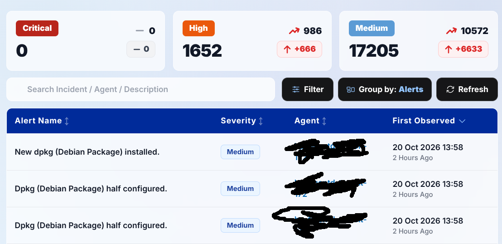
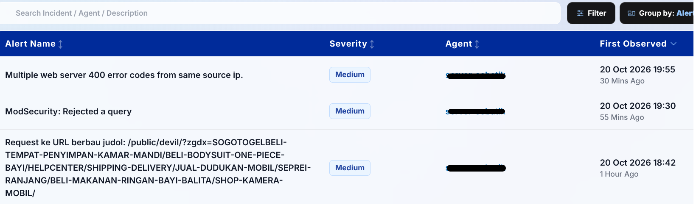
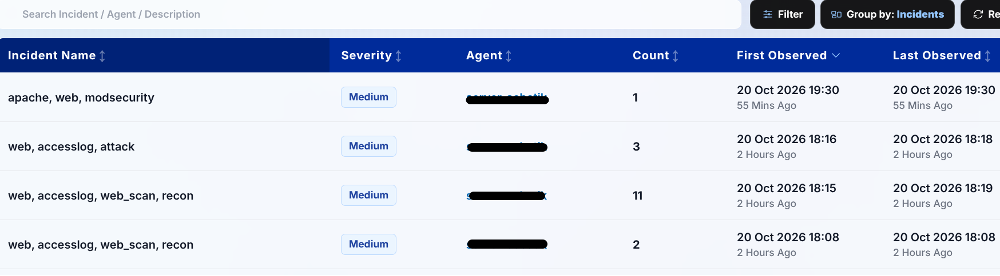
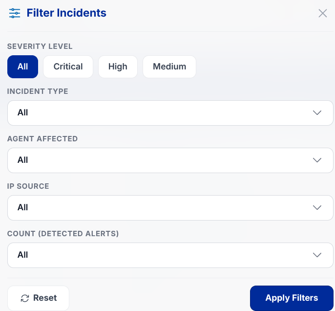
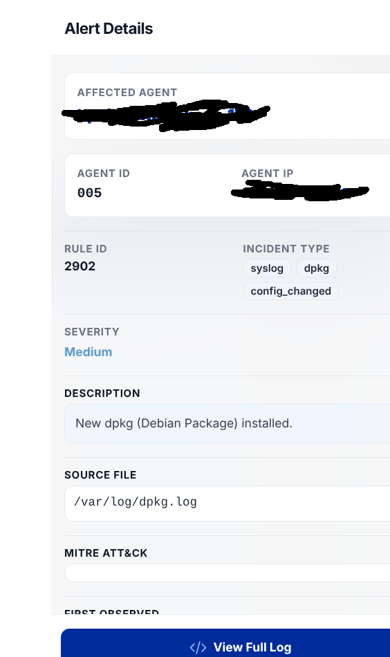
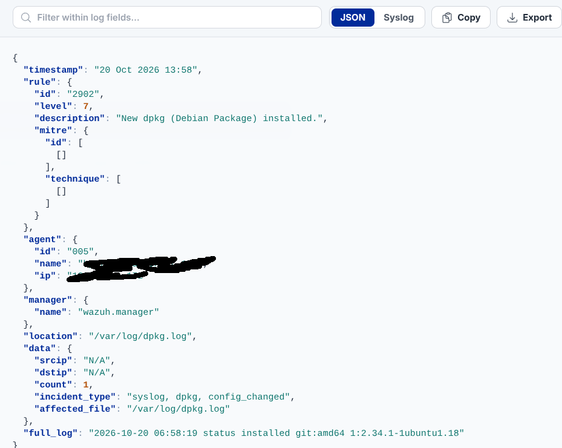

Incidents
The Incidents page aggregates and displays security alerts triggered by detection rules. It allows analysts to review identified malicious activities, examine payload characteristics, and identify critical events warranting formal response.

6.1. Mode Group By Selector
The system provides two view modes to accommodate both high-level operational triage and deep forensic dissection:
1. Mode Alerts
Displays each individual log detection record strictly according to chronological appearance. The table exposes 4 columns: Alert Name, Severity, Agent, and First Observed. This mode is optimal for second-by-second timeline reconstruction during live forensic reviews.

2. Mode Incidents (Operational Recommendation)
Intelligently aggregates repetitive log events sharing identical (Rule ID, Agent ID, Source IP, Date) parameters into a single consolidated row. The table exposes 6 columns: Incident Name, Severity, Agent, Count, First Observed, and Last Observed. This mode significantly mitigates analyst alert fatigue without losing occurrence frequency.

6.2. Search & Advanced Filter Controls
- Quick Search Bar: Free-text search matching detection rule names, agent hostnames, IP addresses, or alert narratives.
- Advanced Filter Modal: Precise granular filtering.

- Severity: Filter by urgency tier (Critical, High, Medium, or Low).
- Incident Type / Category: Filter by threat vector (e.g., Authentication Failure, Malware, Web Attack, System Modification).
- Agent Affected: Isolate alerts originating from specific host machines.
- IP Source: Restrict alerts by specific external or internal adversary IP addresses.
- Count: Filter incident rows based on repetition volume (active exclusively within Mode Incidents).
6.3. Incident Detail Drawer
Clicking any incident row triggers an in-depth slide-out drawer containing:

- Affected Agent & Hostname: Target endpoint machine identifier.
- Agent ID & Agent IP: Wazuh enrollment ID and host network address.
- Rule ID & Incident Type: Signature rule identifier and category classification badge.
- Count, Severity & IP Source: Detection frequency, urgency rating, and attacker source IP (when captured).
- Description: Narrative technical explanation of the triggered rule logic.
- Source File: Operating system log path or binary location triggering the detection (e.g.,
/var/log/auth.log). - MITRE ATT&CK: Standardized adversary tactic and technique classification.
- First Observed & Last Observed: Timestamps of initial detection and latest recurrence.
- "View Full Log" Button: Action button opening the raw structured JSON log viewer.
6.4. Full Logs Modal
Opens an inspection modal rendering raw log telemetry in native structured JSON format:

- In-Log Search: Rapid text filter bar to locate specific JSON key-value pairs or substrings instantly.
- Structured JSON: Clean syntax-formatted payload inspection.
- Copy: Copies complete raw log text directly to the clipboard.
- Download: Saves the raw log artifact locally as a
.jsonfile for forensic archive.